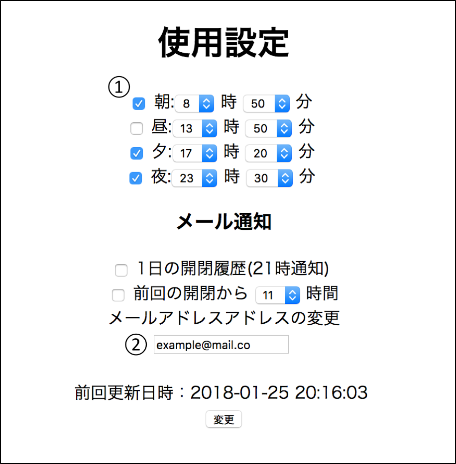

ミミック
使い方
「履歴」 の見方
①
ボタンで 1ヶ月前、 ボタンで 1ヶ月後のカレンダーを閲覧できます。
②
閲覧日は黄色で表示されます。
③
選択した日付の開閉した時間と薬箱の状態が表示されます。
薬箱の状態は3種類あります。
「◯」は設定時間に薬箱が開けられています。
「 × 」は設定時間に薬箱が開けられていません。
「 - 」は設定時間が先である状態です。
「使用設定」 の使い方

①
ご家族がお薬を飲み忘れた時に薬箱から鳴るアラームの時間を設定できます。
②
薬箱の開閉記録を送信するメールアドレスを変更できます。